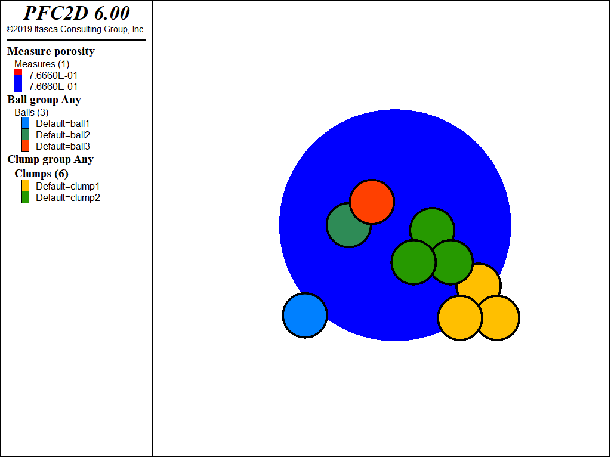
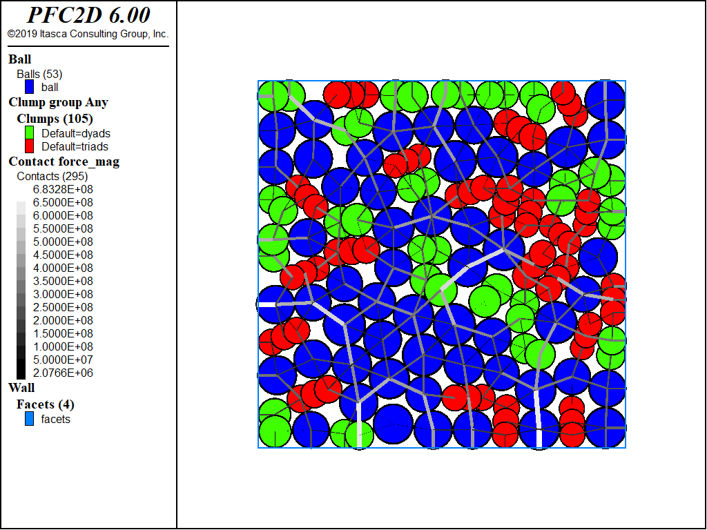

测量的物理量
本主题定义 measure 逻辑中可用的每种测量量，并说明其计算中采用的假设 和近似。
这些物理量包括：
配位数（Coordination Number） | 孔隙率（Porosity） | 应力（Stress） | 应变率（Strain Rate） | 粒径分布（Size Distribution）
配位数
配位数 \(C_n\) 定义为每个 物体（物体可以是球颗粒或刚性团簇）的平均活动接触数，并按下式计算
式中，求和遍历质心位于测量区域内的 \(N_b\) 个物体，\(n_c^{(b)}\) 为物体 \(b\) 的活动接触数。请注意，接触的活动性取决于安装在该接 触上的接触模型（更多细节请参阅“接触模型（Contact Models）”一节）。
孔隙率
孔隙率 \(n\) 定义为测量区域内的总孔隙体积 \(V^{void}\) 与 测量区域体积 \(V^{reg}\) 之比：
式中，\(V^{mat}\) 为测量区域 内材料的体积。\(V^{mat}\) 的近似计算式为（见下图）
式中，\(N_b\) 为完全位于测量区域内的物体数，\(V^{(b)}\) 为 物体 \(b\) 的体积，\(\bar{N}_b\) 为与测量区域相交的物体数， \(\bar{V}^{(b)}\) 为物体 \(b\) 与测量区域之间的相交体积， \(N_c\) 为位于测量区域内的接触数，\(V^{(c)}\) 为 接触 \(c\) 处两物体的重叠体积。请注意，若刚性团簇的每个组成子颗粒都位于测量区域内，则该刚性团簇被视为完全位于测量区域 内。
中心位于 \(\mathbf{X_1}\)、半径为 \(R_1\) 的球颗粒与 中心为 \(\mathbf{X_2}\)、半径为 \(R_2\) 的测量区域之间的相交体积由下式给出
其中：
刚性团簇与测量区域之间的相交体积通过体素化方法近似计算，如
创建测量区域（measure create） 命令说明中所述。
接触 \(c\) 处两物体的重叠体积使用式 (4) 和 (5) 计算， 其中下标表示接触的两个部分（球颗粒或子颗粒）。


图 1：由 3 个球颗粒和 2 个刚性团簇组成的系统的孔隙率计算。球颗粒 1 和刚性团簇 1 与测量区域相交，只有 它们各自的相交体积参与孔隙率计算。球颗粒 2、球颗粒 3 和刚性团簇 2 完全位于 测量区域内，因此其全部体积均参与计算。球颗粒 2 与球颗粒 3、刚性团簇 1 与刚性团簇 2 在 测量区域内接触：应分别从用于式 (2) 的材料总体积中 扣除各自的接触重叠体积。
应力
应力是一种连续介质物理量，因此并不存在于颗粒集合体的每一点上，因为介质是 离散的（见下图）。在离散 PFC 模型中，计算的是接触力和颗粒位移。这些 物理量在研究微观尺度的材料行为时很有用，但它们不能直接传递到 连续介质模型。从微观尺度过渡到连续介质需要采用平均化方法。体积为 \(V\) 的测量区域内的平均应力 \(\bar\sigma_{ij}\) 按下式计算（[Christoffersen1981]）：
式中，\(N_c\) 为位于测量区域内或其边界上的接触数， \(\mathbf{F^{(c)}}\) 为接触力向量，\(\mathbf{L^{(c)}}\) 为连接接触两物体质心的 分支向量，\(\otimes\) 表示外积，按惯例压应力为负。请注意， 上述公式的基本假设基于静力分析。对于动力情形，可能需要采用 其他计算方法（例如，参见 [Fortin2003]）。


图 2：由圆形/球形颗粒（二维/三维）以及二颗粒刚性团簇和三颗粒刚性团簇组成的典型颗粒材料，同时给出 接触力。为清晰起见，此处展示的是二维情形。
应变率
用于测量颗粒集合体内局部应变率的方法 与用于测量局部应力的方法不同。在确定局部应力时，材料体积内的平均 应力直接以离散接触力的形式表示，因为空隙中的力为零。然而， 以类似方式使用速度来表示平均应变率则是不正确的，因为 空隙中的速度不为零。这里不假定空隙中速度场的形式，而是 确定一个应变率张量：该张量基于最佳拟合方法，使质心位于 测量区域内所有球颗粒的预测速度与实测速度之间的误差最小。
在描述最小二乘方法之前，先回顾应变与应变 率之间的关系，并定义其中相应的各项。
两个相邻点处的位移 \(u_i\) 之间的关系由位移梯度张量 \(\alpha_{ij}\) 给出。 设颗粒 \(P\) 和 \(P'\) 瞬时位于 \(x_i\) 和 \(x_i + dx_i\) 处。 这两个点之间的位移差为
位移梯度张量可分解为一个对称张量和一个反对称张量，即
其中：
类似地，两个相邻点处的速度 \(v_i\) 之间的关系由速度梯度张量 \(\dot\alpha_{ij}\) 给出。 （速度场与位移场之间的关系为 \(u_i = v_i dt\)，其中 \(v_i\) 为速度，\(dt\) 为无穷小的时间间隔。） 设颗粒 \(P\) 和 \(P'\) 瞬时位于 \(x_i\) 和 \(x_i + dx_i\) 处。 这两个点之间的速度差为
速度梯度张量可分解为一个对称张量和一个反对称张量，即
其中：
在 PFC 中，速度梯度张量 \(\dot\alpha_{ij}\) 被称为应变率张量。 \(\dot\alpha_{ij}\) 采用以下最小二乘法计算。
对给定测量区域计算得到的应变率张量，是质心位于该测量区域内的颗粒的 \(N_p\) 个实测相对速度值 \(\tilde V_i^{(p)}\) 的最佳拟合。这 \(N_p\) 个颗粒的平均速度与平均位置由下式给出
其中 \(V_i^{(p)}\) 和 \(x_i^{(p)}\) 分别为颗粒 \((p)\) 的平动速度和质心位置。 实测相对速度值由下式给出
对于给定的 \(\dot\alpha_{ij}\)，预测的相对速度值 \(\tilde v_i^{(p)}\) 可利用公式 (10) 写为
其中
这些预测值的误差度量由下式给出
其中 \(z\) 为预测速度与实测速度之间偏差的平方和。 使 \(z\) 取最小值的条件为
将公式 (15) 代入公式 (17) 并求导，可得到以下 九个方程：
这九个方程可通过如下方式求解：对 3 × 3 系数矩阵进行一次 LU 分解， 并对令 \(i\) = 1、2 和 3 所得的三个不同右端项分别进行三次回代。 这样即可得到应变率张量的全部九个分量。
尺寸分布
完全位于测量区域内或与该测量区域相交的物体的累积体积百分比，可通过 输出累积粒径分布数据（measure dump） 命令计算，
并导出到表格中。质心落在该测量区域内的所有物体，均按 {二维为面积；三维为体积} 等效 {二维为圆；三维为球} 直径、
以及由 创建测量区域（measure create） 或 修改测量区域（measure modify） 命令定义的分箱进行分箱统计。
数据还可导出到 FISH
数组中，所用的内置函数为 measure.size。
参考文献
| [Christoffersen1981] | Christoffersen, J.、M. M. Mehrabadi 与 S. Nemat-Nasser，“颗粒材料行为的微观力学描述”（A micromechanical description of granular material behavior），J. Appl. Mech.，48，第 339-344 页（1981）。 |
| [Fortin2003] | Fortin, J.、O. Millet 与 G. de Saxcé，“颗粒介质平均应力张量的构建”（Construction of an averaged stress tensor for granular medium），European Journal of Mechanics A/Solids，22，第 567-582 页（2003）。 |
| 这些内容对您有帮助吗？… | FLAC3D © 2019, Itasca | 原文更新于 2020 年 10 月 8 日 |